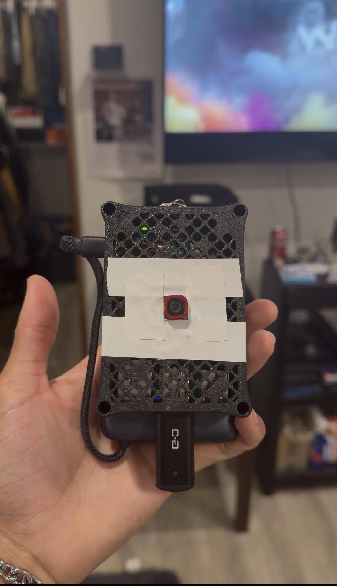

Hello, My Name Is Camrin
Welcome to my portfolio site!
Projects
Fully Autonomous Kissing Robot
- Developed the interactive application in Python using VS Code.
- Converted the Python application into a Linux executable for deployment on the Raspberry Pi.
- Integrated a display compatible with the Raspberry Pi.
- Built a separate Arduino-based control system using an Arduino Uno, servo motor, sensor, and L293D motor driver module.
- Soldered header pins to the L293D to connect the sensor and servo motor.
- Integrated motors and wheels with the L293D motor driver to control the robot's movement.
- Mounted the Raspberry Pi and display system onto the mobile Arduino robot.
- Added supporting axles to improve stability during movement.
- Programmed the sensor to scan left, center, and right for obstacles, allowing the robot to back away and change direction when an object is detected.
- Developed an interactive interface that asks the user for a kiss and responds with a thank-you message when the on-screen button is pressed.
- Powered the Raspberry Pi and Arduino systems using a power bank and their respective power cables.
* Linux executable created independently.
* Overall time to complete: Approximately 4 months
Facial Recognition via Instagram User Input
- Developed the project in Python.
- Built and updated a web scraper, replacing outdated syntax and functionality where necessary.
- Integrated the web scraper with a facial recognition application.
- Created a directory system for downloaded images, which are processed by the facial recognition system for comparison.
- Processed filenames to remove file extensions and numbering so that only identifying keywords remain.
- Added functionality to detect multiple faces within images associated with each Instagram profile.
- Developed logic to determine which face appears most frequently within a user's posts and associate that face with the corresponding username.
* Python Web Scraping Tutorial
* Real-Time Facial Recognition Python Tutorial
* Tutorial code was modified and expanded to support updated web scraping functionality, file processing, and multi-face grouping.
* Overall time to complete: Approximately 2 months
Simple Camera
- Developed using only javascript.
Project Resources:
* Used Raspberry Pi Software camera documentation for camera operation
* Used Node.js child_process documentation for assistance with handling and webapp backend
* Used FFmpeg documentation to get USB camera to work with audio + visual capture
* Used ALSA documentation to get the record audio feature running
* Used Network Manager documentation to setup the Hotspot to webapp pipeline
* Last but not least used systemd documentation to make sure the webapp Is the first thing to run once Pi Is on
Overall time to complete: Approximately 4 months
Source Code
Client Websites
- Developed a website for 2 client's using HTML and CSS.
* Overall time to complete: Approximately 1 month
*Site 1 Source Code *Site 2 Source CodeCompass/ Temp Sensor
- Developed a handheld fully arduino C++ programmed compass/ temperature sensor
* Overall time to complete: Approximately 1 week
*Source Code *Tutorial for compass *Tutorial for temp sensor *Assistance For Arduino R4 Uno Wifi Webapp (integrated into .ino file) *3D Printed case I used